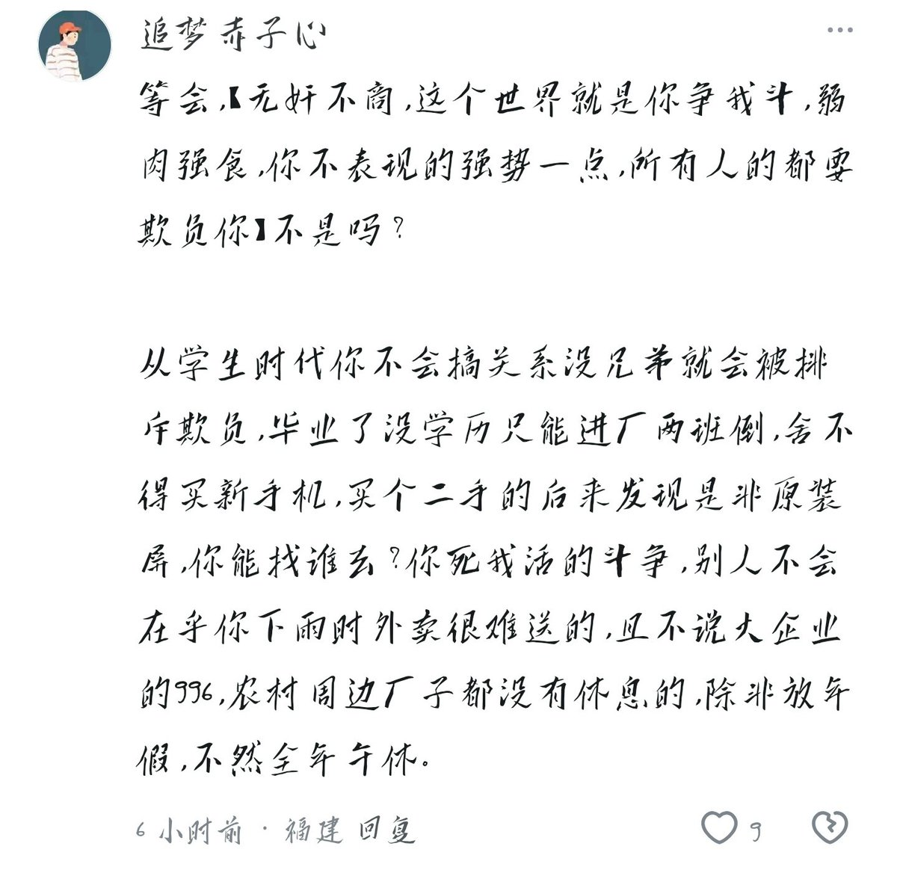

Жизнь — это движение.
@432Ifantrygroup
你觉得这个世界就应该是弱肉强食的，那自然就会有一些善良的人拒绝生活在这样一个善良被当作是弱点的扭曲世界中。其中一部分比较内向或者胆小的，例如那些自杀自残的孩子，就选择离开这个世界；其中一部分比较狂妄不羁的，例如我，就选择改变这个世界，那就是----革命。

Жизнь — это движение.
@432Ifantrygroup
这位更是搞笑，用实然去论证应然，照他的逻辑，因为天会下雨，所以我们不该打伞，而是不出门。 https://t.co/svkKE6ooX3 https://t.co/mADYLkyXKd